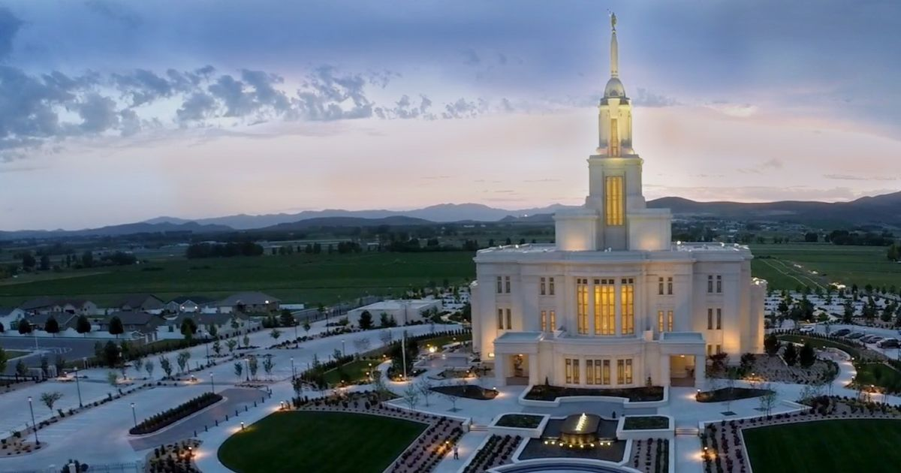
Latter-day Saints build temples because they believe God has commanded His people to create sacred places where worshippers make covenants, receive ordinances, learn of Jesus Christ, and seek blessings that extend beyond death.
Temples are not the same as ordinary Sunday meetinghouses. This page summarizes Latter-day Saint belief; official Church temple resources are linked below.
Watch and study
See the purpose behind the building
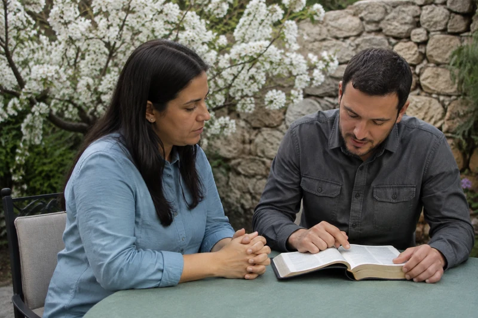
Explore and study
Begin with the purpose of worship
Two friends read scripture together on a shaded garden terrace. Their quiet study turns toward the Kirtland dedicatory prayer and its longing for learning, holiness and God's help.
Begin with Temples Through Time, which brings together scholars and people of different faiths to discuss ancient and modern temples. Listen for both shared interests and the distinct Latter-day Saint understanding explained on this page. The significance of a temple is best understood through what worshippers believe happens there.
Doctrine and Covenants 109:1-15 records the Kirtland Temple dedication prayer in March 1836. The prayer asks the Father to accept the house in the name of Jesus Christ and seeks learning, holiness, and His presence. Study and faith appear together in verses 7 and 14.
Continue through verses 21-23. The prayer includes repentance and restoration to blessings, then asks that servants leave the temple strengthened to share the gospel. How might worship prepare us to serve when we return home? Think of a responsibility or a person who needs your care.
A House of the Lord
A dedicated temple is regarded as a holy house of the Lord. Latter-day Saints connect modern temples with a scriptural pattern of sacred places where God teaches, covenants with, and blesses His people.

The Kirtland Temple
Explore the Kirtland Temple and the witnesses recorded there.
Doctrine and Covenants 110:1–10
Read “The Kirtland Temple” in Church History →Covenants and Ordinances
A covenant is a sacred commitment between a person and God. An ordinance is a sacred religious act performed by priesthood authority. The Church explains these terms in Why Ordinances and Covenants Matter. Temple worship includes ordinances that are not performed in ordinary chapels. The endowment teaches God’s plan and includes covenants to follow Jesus Christ. Temple sealings unite husbands and wives and connect children to parents with the promise that family relationships can continue eternally when covenants are faithfully kept.
Jesus Christ Is Central to Temple Worship
Temple worship is intended to point disciples toward the Savior. The ordinances teach about God’s plan of salvation, the Atonement of Jesus Christ, obedience, sacrifice, consecrated discipleship, and the hope of returning to God through Christ.
Why Are Some Temple Ceremonies Limited to Prepared Members?
Before dedication, temples often hold public open houses. After dedication, participation in temple ordinances is reserved for Church members who have prepared spiritually and are recommended by local Church leaders. Latter-day Saints describe this as sacred preparation rather than secrecy: the covenants are treated as solemn commitments requiring readiness.

Read His words together
An adult listens beside open scriptures. Bring your own questions to the Savior’s words.
Read “Read His words together” in Jesus Christ →What About People Who Have Died?
Latter-day Saints believe God provides every person a fair opportunity to receive the gospel. In temples, living members may receive ordinances by proxy for deceased ancestors. Those ordinances are understood as an offer, not a forced conversion; the deceased retain agency to accept or reject them.
When Temple Questions Are Personal
For some readers, temple teachings bring hope; for others, they bring questions about a loved one, divorce, or circumstances that did not turn out as expected. A short explanation of sealing cannot resolve every individual situation. The official temple sealing overview explains the teaching, while a trusted Church leader can help with questions about your own participation.
If the subject is tender, you may prefer to begin with families and belonging or support through divorce. There is no need to share private family details here in order to keep learning.
A journey through scripture and history
The temple story: from the beginning to today
Follow the story of sacred places, covenant worship, and Jesus Christ across scripture and the history of the Church. The linked passages let you read each account in its own setting.
01 · Creation and the first generations
Before a temple of stone
The story begins with God's desire to be near His children. Latter-day Saints read Eden as a sacred place where Adam and Eve lived in God's presence. After leaving the garden, they called upon Him, worked, raised a family, and learned to worship. Their story gives temple study its first great question: how can people return to God?
Explore and study
Before a temple of stone
A garden and the earth beyond it begin a study of God's presence, mortal life, and the hope of return through Jesus Christ.
In Moses 5, an angel explains that Adam's sacrifice points to the future sacrifice of the Only Begotten. Adam and Eve then teach their children. The connection with temples is a connection of worship, redemption, and return; the account does not describe a stone temple in Eden. Modern temple teaching begins with the Creation and Fall and leads toward the redeeming work of Jesus Christ.
02 · The patriarchs
Altars along the covenant journey
Long before the temple in Jerusalem, Genesis describes worship at altars. Abram travels into Canaan, receives the promise of a land for his descendants, and builds an altar. Near Bethel he pitches his tent, builds another altar, and calls upon the Lord. Worship accompanies a journey whose outcome he cannot yet see.
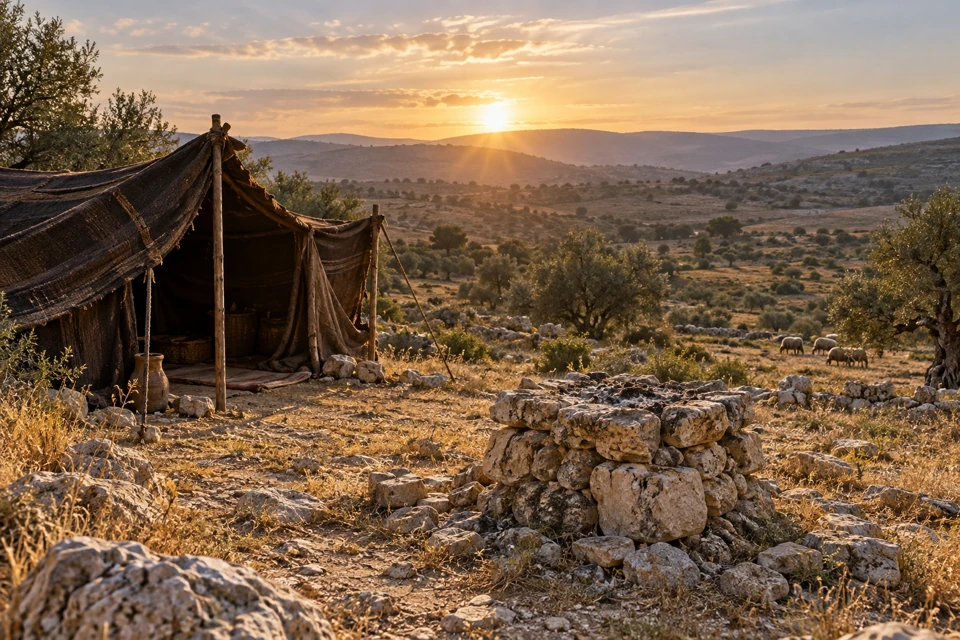
Explore and study
Altars along the covenant journey
An altar beside a tent recalls Abraham's worship along his journey and a promise reaching to all families of the earth.
The promise reaches beyond one household: through Abraham all families of the earth are to be blessed. Latter-day Saints connect temple covenants with that larger gathering. An altar in a landscape and a later temple are different structures, but both belong to this scriptural story of responding to God and remembering His promises.
03 · The Exodus
A sanctuary that traveled with Israel
After the Exodus, Israel is commanded to make a sanctuary so that the Lord may dwell among the people. The tabernacle is portable: a tent sanctuary, its furnishings, and its surrounding court can accompany a traveling community. Exodus describes gifts of materials and work offered for this shared purpose.
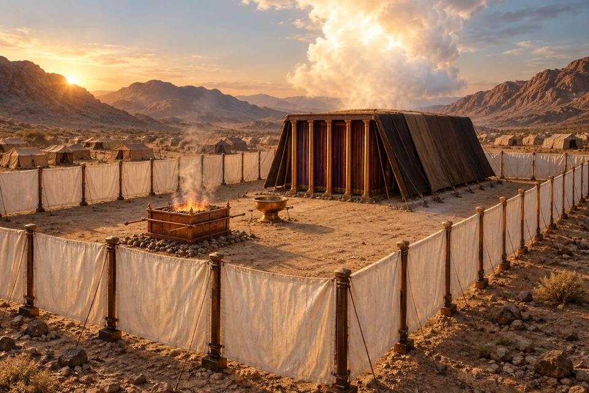
Explore and study
A sanctuary that traveled with Israel
The portable sanctuary stands among Israel's tents. Exodus describes the cloud above it as the people continue their journey.
The account closes with the cloud covering the tabernacle and the Lord's glory filling it. Israel's worship is not waiting for a settled capital or an impressive stone building. Here, in the wilderness, the people are learning to order their life around God's presence. The biblical descriptions guide the picture, while the exact appearance of the ancient camp remains uncertain.
04 · Solomon's reign
A house of prayer in Jerusalem
The sanctuary becomes a lasting house in Jerusalem during Solomon's reign. First Kings describes the ark being brought into the temple and the cloud filling the house. Yet Solomon's dedicatory prayer refuses to confine God to architecture: even heaven cannot contain Him.
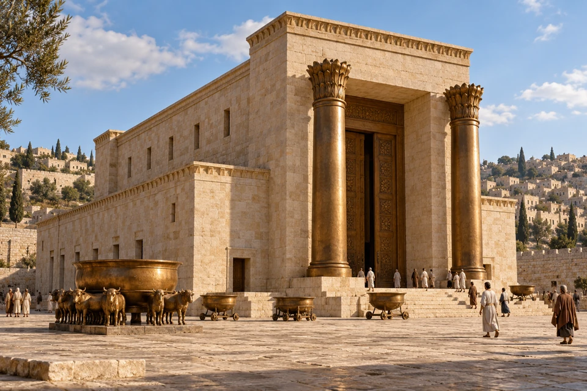
Explore and study
A house of prayer in Jerusalem
The entrance of Solomon's temple invites a reading of his prayer: may God hear His people and the stranger who comes seeking Him.
Solomon asks that prayers offered toward this place be heard, including the prayer of a stranger who comes from a distant country. The dedication joins a particular holy place to a hope extending beyond Israel. The building matters because of the God worshipped there and the repentance, justice, and mercy His people seek.
05 · Exile and the Second Temple
Loss, return, and rebuilding
Jerusalem's first temple was destroyed in the Babylonian conquest. Ezra tells of returned exiles restoring an altar and laying the foundation of a new house. Those gathered respond with both joy and tears: older people remember the former temple while others rejoice at a new beginning.
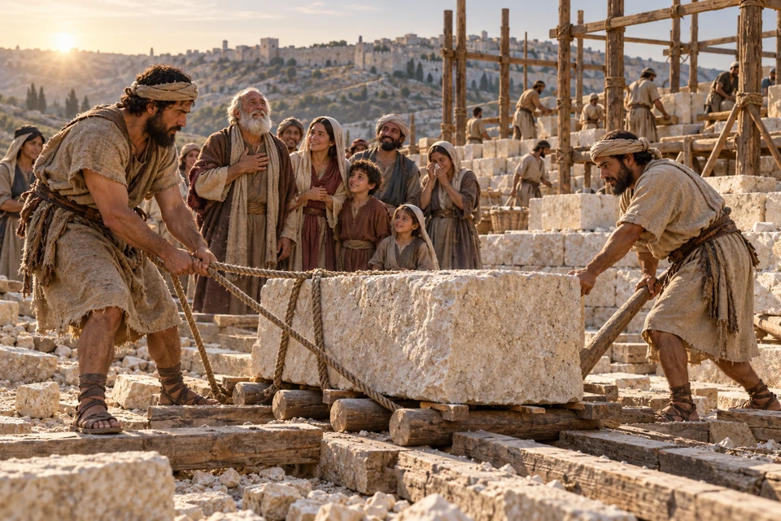
Explore and study
Loss, return, and rebuilding
Workers guide a stone into place as the community gathers. Ezra remembers both rejoicing and tears when the new temple foundation was laid.
The rebuilt temple is associated with Zerubbabel. Centuries later, Herod enlarges and transforms the temple complex. That later setting is the temple world of the Gospels. Keeping these stages distinct helps us follow the story: Solomon's temple, the rebuilt Second Temple, and its great Herodian expansion are not three interchangeable pictures.
06 · Nephi and later Nephite worship
A temple in the Book of Mormon record
The Book of Mormon preserves a second scriptural setting for temple worship. Nephi says his people built a temple after the manner of Solomon’s, without all the same precious materials, and describes its fine workmanship. The surrounding passage mentions learning to work in wood and other materials; it does not give an exhaustive list of what was used in this temple. This picture interprets the building in timber, while its exact materials and appearance remain unknown.
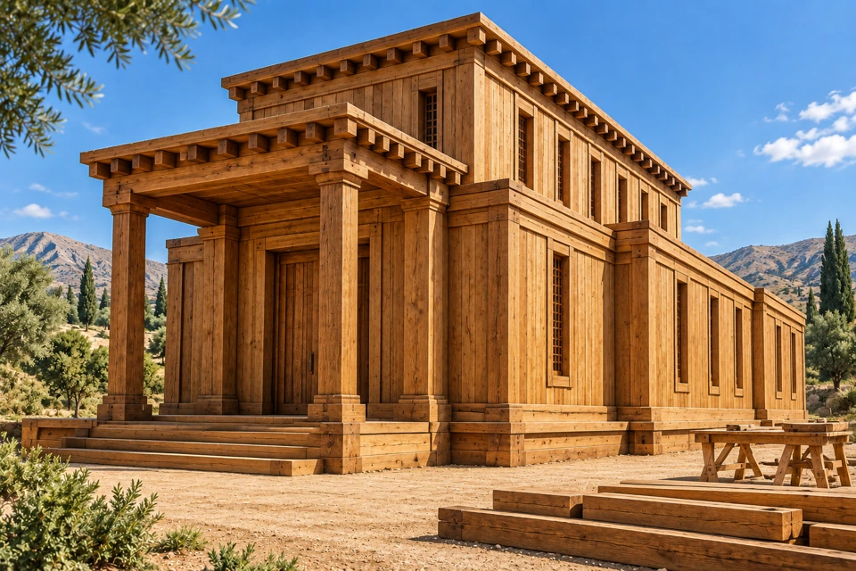
Explore and study
A temple in the Book of Mormon record
An artistic interpretation guided by Nephi’s account: a temple after the manner of Solomon’s, with fine workmanship and fewer precious materials. The exact appearance and materials are not recorded.
Later, King Benjamin gathers his people at a temple to teach them about Christ and their responsibility to one another. The record supplies these acts of worship and teaching, but few architectural details. We can follow its spiritual narrative without assigning a particular surviving ruin or modern map location to the temple.
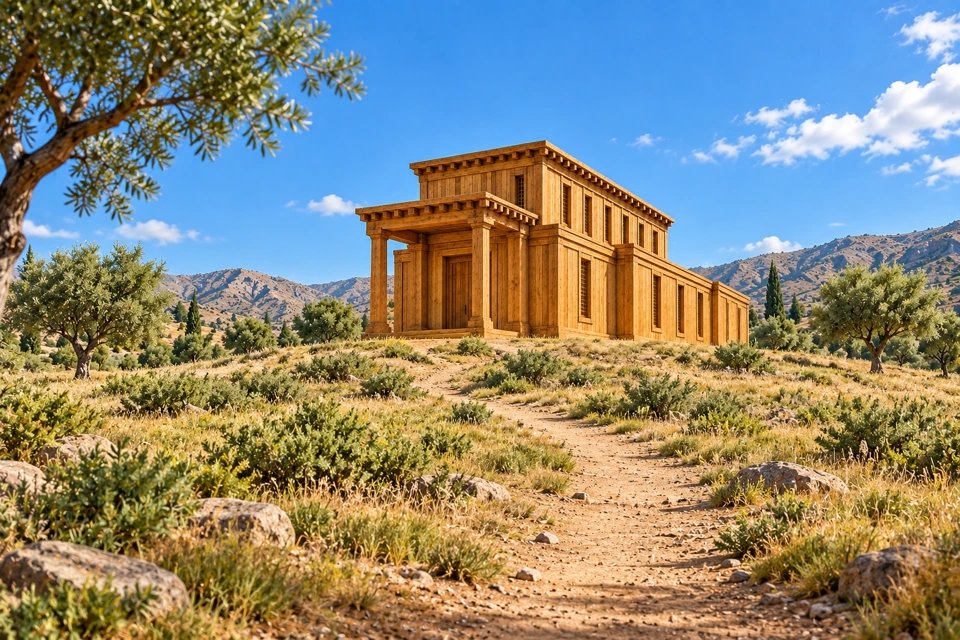
A companion view
An approach to the temple
A wider artistic view of the same timber interpretation. Jacob describes going up into the temple; the gentle rise pictured here is an interpretation, not a known location or recorded hill profile.
07 · The childhood of Jesus
Jesus at twelve in His Father's house
Luke places Jesus in the Jerusalem temple when He is twelve. After the Passover journey, Mary and Joseph search for Him and find Him among the teachers, listening and asking questions. Those who hear Him are astonished at His understanding.
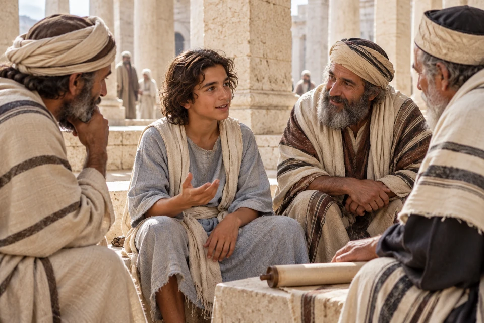
Explore and study
Jesus at twelve in His Father's house
The twelve-year-old Jesus listens and asks questions among the teachers. Luke's account brings us close to His growing understanding of His Father's work.
His answer to His parents reveals His awareness of His Father's work. Luke also says He returns to Nazareth with them and continues to grow. This temple scene holds together an extraordinary calling and a real childhood. The Son of God listens, asks questions, and learns among His people.
08 · Jesus' final week in Jerusalem
Restoring the purpose of the house
Matthew describes Jesus entering the temple, driving out buyers and sellers, and overturning the money changers' tables. His words call the house back to prayer. This is a forceful act, rooted in the purpose of the place and the needs of those who come to worship.
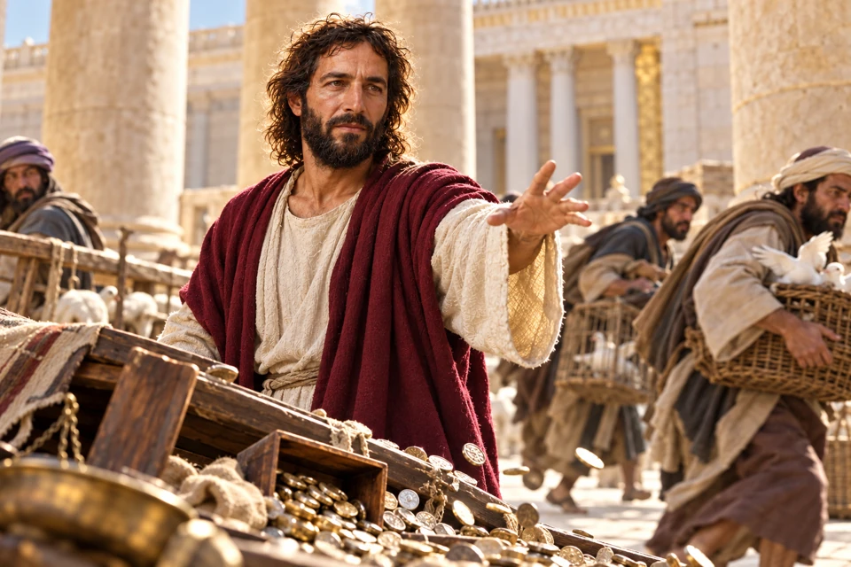
Explore and study
Restoring the purpose of the house
With quiet resolve, Jesus calls the temple a house of prayer. The overturned table and departing merchants place His words in the temple court.
The scene should not be used to condemn Jewish people as a group: Jesus, His disciples, and the worshippers belong within Israel's story. Read what He does next. Matthew moves immediately from the overturned tables to people coming to Him for healing, joining His demand for reverence to His care for human need.
09 · Jesus' final week in Jerusalem
Healing in the temple courts
The temple is also a place where Matthew shows Jesus healing. People who are blind or unable to walk come to Him there. Children call out in praise, and Jesus answers those who object. Their voices belong in the account alongside the movement of crowds and the concerns of the leaders.
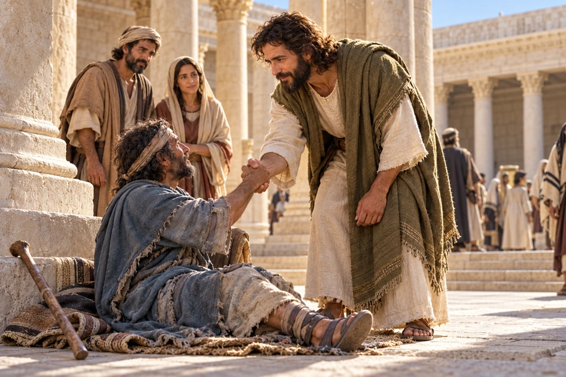
Explore and study
Healing in the temple courts
Those who need healing come to Jesus in the temple. His attention rests on the person before Him.
This brief passage changes the way we imagine sacred space. Reverence does not make the suffering invisible. In the Gospel story, the Savior receives people with needs and gives attention to them. A temple study centered on Him must leave room for that compassion.
10 · Jesus teaches near the treasury
The offering Jesus noticed
Sitting opposite the treasury, Jesus watches people give. A poor widow places two small coins among the offerings. He calls His disciples' attention to her gift and explains its cost: others have given from abundance, while she has given from what she needs to live.
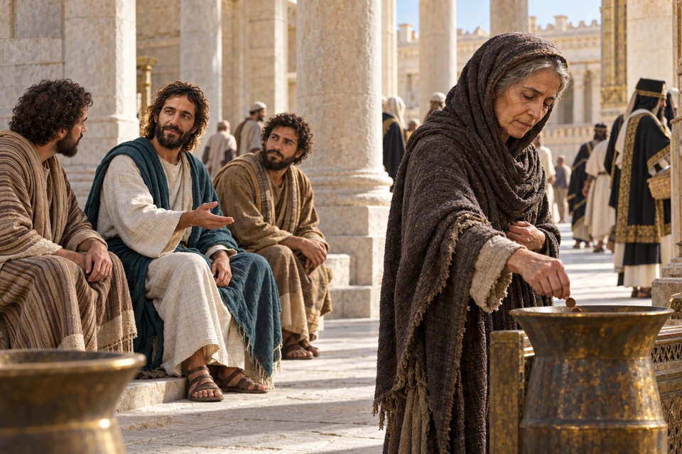
Explore and study
The offering Jesus noticed
Jesus notices the widow's small offering and teaches His disciples to understand its cost.
The smallness of the coins is not the smallness of the gift. Read this passage beside the warning immediately before it about those who exploit widows. Christ's attention makes a vulnerable person visible. Sacred buildings and visible offerings never excuse neglect of the people around them.
11 · A closer look at the same temple encounter
Seen by the Savior
Return to the same moment from the Savior's side. Jesus sees a person whose small gift could pass unnoticed in a busy court. He asks His disciples to pay attention to her.
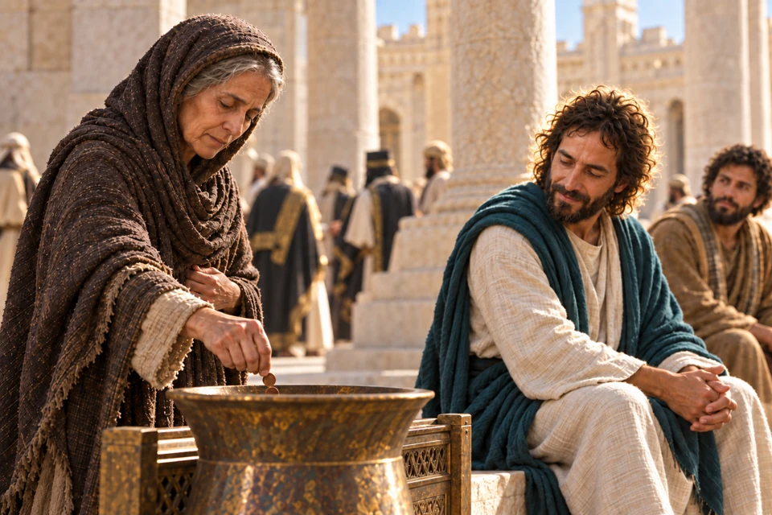
Explore and study
Seen by the Savior
Jesus watches the widow with tender attention. His teaching honors a gift whose value cannot be measured by its size.
His expression in this companion picture invites reflection on His care. Mark records His observation and teaching, not a conversation with the widow. As you look, consider whom you might notice more carefully today, especially when a quiet act of faith costs more than others can see.
Pause and reflect
Whose quiet effort could you notice and honor today?
12 · Christ's ministry at Bountiful
The risen Lord and the covenant people
Third Nephi begins the Savior's appearance with people gathered at the temple in Bountiful. He identifies Himself, invites them to witness His wounds, and teaches them. The gathering becomes a place of personal recognition as well as shared instruction.
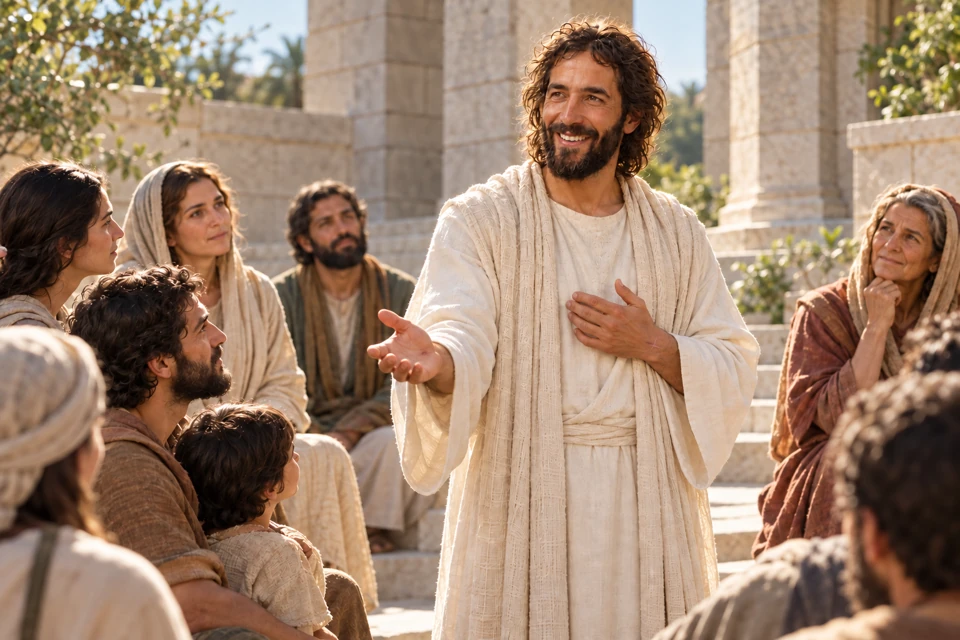
Explore and study
The risen Lord and the covenant people
The risen Savior teaches the gathered people about Abraham's covenant and the blessing He brings to their families.
During this ministry He speaks of Israel, the prophets, and the covenant made with Abraham. He tells the people they are children of that covenant and turns them toward blessing and repentance. Temple history and the gathering of Israel meet here in the voice of the risen Christ. Read His words slowly and notice how He connects an ancient promise with the lives of those listening.
13 · The apostles and Jerusalem
At the gate, in the name of Jesus
Acts returns us to Jerusalem after the Resurrection. Peter and John go to the temple at the hour of prayer. At the Beautiful gate, a man who has been unable to walk asks for help. Peter takes his hand, and the man rises in the name of Jesus Christ, entering the temple with them and praising God.
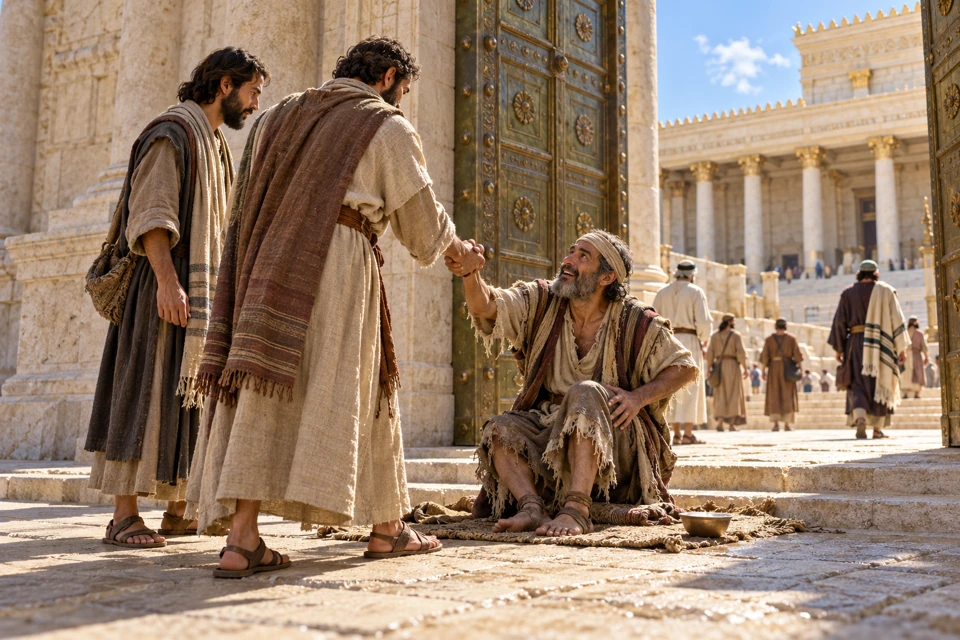
Explore and study
At the gate, in the name of Jesus
Peter takes the man's hand at the temple gate. Acts attributes the healing to Jesus Christ.
The Jerusalem temple was destroyed by Roman forces in AD 70. Latter-day Saints understand the later Restoration as a renewal of priesthood authority and temple ordinances. That belief does not erase the long histories of Jewish worship, Christian churches, or other sacred buildings; it explains the Church's own claim about restored authority.
14 · 1833–1836
Kirtland: building a house together
The early Latter-day Saints in Ohio undertook temple construction while their community was still young and resources were limited. The Kirtland Temple was dedicated on March 27, 1836. Its assembly halls served a community that gathered to pray, learn, and prepare to carry its message abroad.
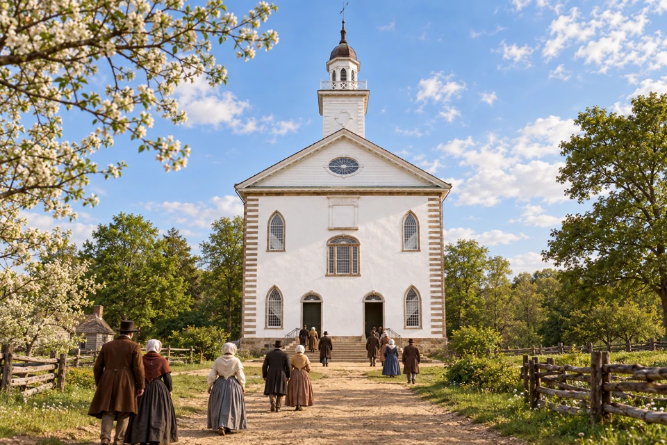
Explore and study
Kirtland: building a house together
The Saints gather at Kirtland after years of shared labor. Their dedicatory prayer asks for learning, faith, and strength to serve.
Kirtland Temple: Church History Topics Doctrine and Covenants 109:7–9, 22–23
The dedicatory prayer asks for a house of learning, faith, and order, and for those who leave it to go forth with God's power. Kirtland was an important beginning in a developing temple history. Its uses and ordinances should not simply be pictured as identical to those of present-day temples.
A local quarry supplied stone, and a sawmill operated through donated service supplied wood. Skilled carpenters shaped the unusual tiered pulpits inside. The building required more than financial contributions: people gave time, strength, and practiced skills. Their small community made a house large enough for shared worship and learning, even while its own future remained uncertain.
Meet one of the people whose generosity helped the Kirtland work move forward. Read John Tanner’s story
15 · April 3, 1836
The Savior's acceptance and restored keys
A week after the dedication, Joseph Smith and Oliver Cowdery recorded a vision of Jesus Christ in the Kirtland Temple. Doctrine and Covenants 110 describes Him standing upon the breastwork of the pulpit and accepting the house. This is the witnesses' recorded sacred experience, central to the Latter-day Saint understanding of the temple.
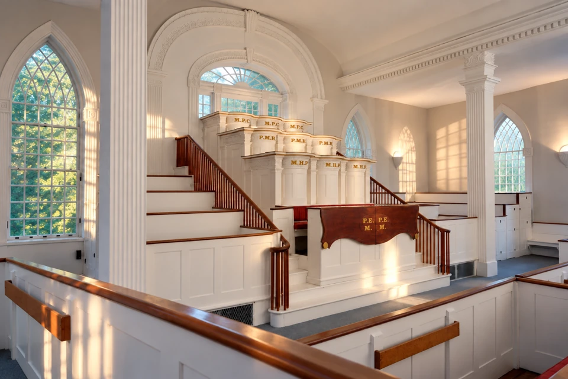
Explore and study
The Savior's acceptance and restored keys
Daylight rests on the preserved Kirtland pulpits. Joseph Smith and Oliver Cowdery recorded their vision of the Savior in this temple; read their account in Doctrine and Covenants 110.
The account continues with Moses, Elias, and Elijah entrusting priesthood keys. Latter-day Saints connect these keys with gathering Israel and binding families across generations. Keys here means authority to direct God's work. The passage joins the new house in Ohio to ancient covenant promises and to service reaching beyond a single lifetime.
16 · The 1840s
Nauvoo: a hope reaching beyond death
In Nauvoo, temple teaching expanded as Joseph Smith taught baptism for the dead, the endowment, and sealing. The temple rose while the Saints faced increasing danger. Many received ordinances before leaving the city, carrying their commitments into an uncertain journey west.
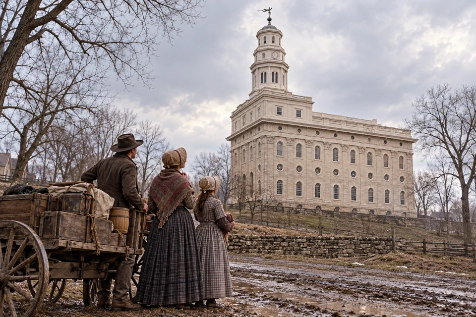
Explore and study
Nauvoo: a hope reaching beyond death
The Nauvoo Temple stands behind people preparing to leave. The commitments made there traveled west with them.
Nauvoo Temple: Church History Topics About Proxy Baptism and Confirmation Why Ordinances and Covenants Matter
The Saints resumed work after Joseph and Hyrum Smith were killed in June 1844. Endowments began in the attic in December 1845, before the whole building was finished; thousands of people received them before the exodus. The first departing company left in February 1846, and the temple was dedicated from April 30 to May 1, with some portions still unfinished. Finishing a house they would soon leave gives this chapter its particular weight: they valued the promises received there even when they could not keep possession of the building.
The original building was later damaged by fire and a tornado. A temple was rebuilt on the site and dedicated in 2002, recalling that earlier sacrifice. The hope behind proxy service remains personal: people who have died are remembered by name, while Latter-day Saint teaching preserves their freedom to accept or reject what is offered on their behalf.
17 · 1877–1893
Temples in the mountain settlements
In Utah, temple building continued across generations. St. George was the first temple completed there, in 1877. It became the first house of the Lord where endowment and sealing ordinances were performed by proxy for deceased ancestors. Logan and Manti followed while work continued in Salt Lake City.
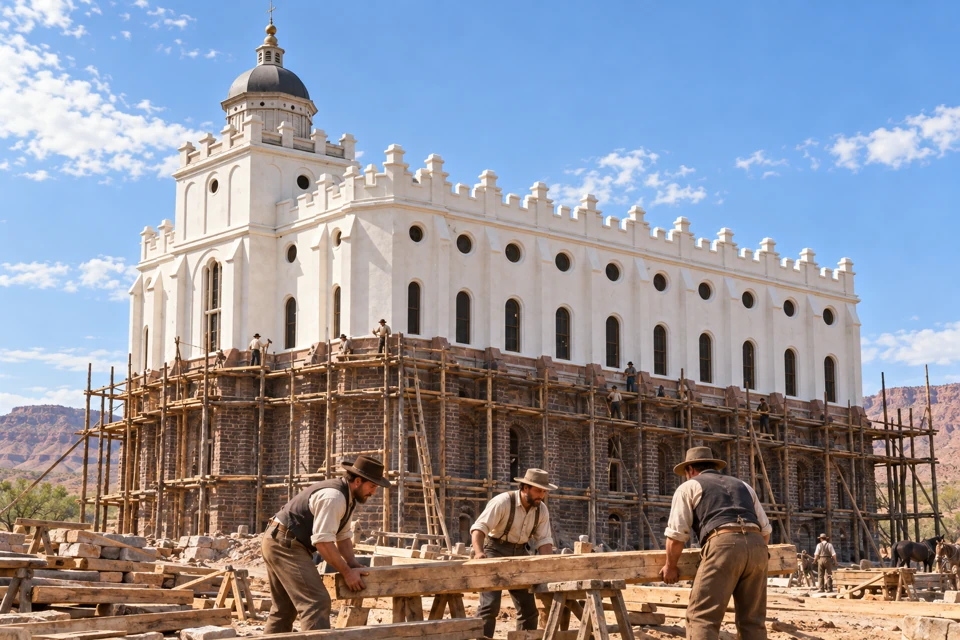
Explore and study
Temples in the mountain settlements
Timber scaffolding surrounds the rising St. George Temple. Shared labor prepared a house that opened a new chapter of temple service in 1877.
The Original Dedication of the St. George Temple Salt Lake Temple: Church History Topics
The Salt Lake Temple took forty years to build, from 1853 to its dedication in 1893. The long project joined quarry work, transport, skilled craft, donated means, and sustained community effort. These houses differed in appearance, but each served the growing work of worship, covenant making, and remembrance of the dead.
18 · 1853–1893, with renewal continuing today
Salt Lake: forty years of patient work
Salt Lake's temple story stretches across forty years. For its first two decades, wagon teams hauled granite from Little Cottonwood Canyon. Poor harvests and difficult weather slowed progress. Weaknesses in the foundation required parts of the work to be taken apart and rebuilt. Progress sometimes meant correcting what lay beneath the visible walls.
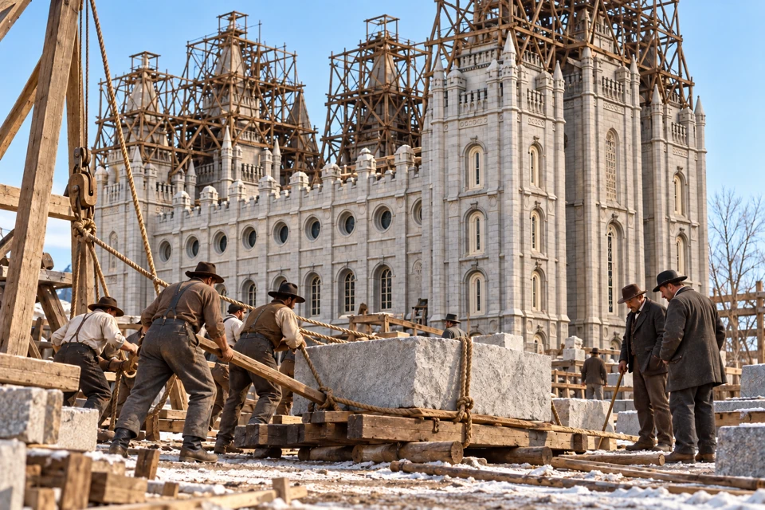
Explore and study
Salt Lake: forty years of patient work
A heavy stone and patient labor recall the decades needed to raise the Salt Lake Temple. The work included rebuilding foundations as well as lifting walls.
Salt Lake Temple: Church History Topics Salt Lake Temple current information
Rail transport later made stone delivery more dependable. The temple was dedicated on April 6, 1893, after generations of effort. Its continuing renovation belongs to the same responsibility of caring for a sacred house. Today's strengthening work continues that story of care for a place set apart for worship.
Pause and reflect
What does the willingness to repair a foundation teach you about preparing a life for lasting commitments?
Follow the life of a stonecutter who contributed to this long building effort. Read John Rowe Moyle’s story
19 · The twentieth century
The temple journey becomes worldwide
The Laie Hawaii Temple, dedicated in 1919, brought temple worship closer to Saints across the Pacific. Bern Switzerland, dedicated in 1955, marked another step as temples served communities across national and language boundaries. Temples increasingly came nearer to the places where Church members lived.
Explore and study
The temple journey becomes worldwide
Visitors approach Laie in this contemporary view. Dedicated in 1919, the temple brought worship closer to communities across the Pacific.
The Laie Hawaii Temple: A Century of Gathering Bern Switzerland Temple Official Declaration 2
That story also includes a painful restriction: Black men of African descent were restricted from priesthood ordination, and Black men and women of African descent from temple endowment and sealing. Official Declaration 2 records the 1978 revelation extending these blessings to all worthy members without regard to race or color. A truthful account of worldwide gathering includes both that earlier exclusion and its end.
20 · Today
Living worship, continuing care
Today, Latter-day Saints enter temples to make covenants with God, receive instruction centered on Jesus Christ, and serve on behalf of deceased people. Family history gives that service names and lives to remember. Public open houses also allow neighbors and visitors to learn about many new or renovated temples before dedication.
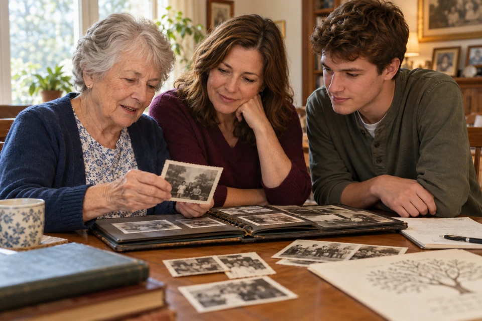
Explore and study
Living worship, continuing care
Names on a page lead back to individual lives. Learning an ancestor's story can give temple service a more personal meaning.
Why Latter-day Saints Build Temples Salt Lake Temple celebration announcement About the Temple Endowment
The work includes caring for older buildings as well as constructing new ones. As checked on September 29, 2026, the Church had announced a Salt Lake Temple public celebration for April 5 through October 1, 2027. Plans and temple operating status can change, so follow the Church's current announcements when planning a visit. The continuing story is about people learning to love God and one another through the covenants they make.
The Church publicly describes five endowment covenants: obedience to God, sacrifice in His service, living the gospel of Jesus Christ, chastity, and consecrating time and resources to His work. These are solemn commitments, meant to shape daily conduct. Preparation includes understanding what is promised and choosing freely; temple worship is a continuing opportunity to learn, repent, and draw closer to the Savior.
Temple sealing expresses the hope that marriage and family relationships can continue beyond death through Jesus Christ. The promised blessings are connected with faithfulness to God, not simply attendance at a ceremony. People whose family circumstances are painful or incomplete belong within the Church's invitation to hope; this study cannot determine another person's eternal relationships. Questions about individual circumstances deserve careful counsel and compassion.
Understand the Connections Behind Temple Worship
Explore and study
Prepare through learning
Open scriptures, a notebook and a folded jacket wait in readiness for worship. The Kirtland dedicatory prayer teaches that preparation for God's house includes learning, faith and order.
Covenants grow from a relationship with God
Mosiah 18:8-10 describes baptismal commitment in terms of bearing burdens, offering comfort, and serving God. These are baptismal teachings, not a description of the temple ceremony. They provide a familiar starting point for understanding why a covenant is meant to shape ordinary conduct as well as worship.
Why do Latter-day Saints speak of restored keys?
Doctrine and Covenants 110:1-10, 13-16 records a vision in the Kirtland Temple and the appearance of Elijah. Latter-day Saints connect this account with restored authority for temple work. Here keys means authority to direct particular priesthood work, not a physical object. The passage belongs to the Church's Restoration account and should be read in that setting.
Service reaches beyond the living
Read Doctrine and Covenants 138:30-35, 58-59 to connect temple service with teaching among the dead. Proxy describes one person performing an ordinance on behalf of another. It does not mean someone else's faith or willingness is decided for them. Keep the official temple resources beside this study when exploring the Church's explanation.

Messengers prepared to serve
The Savior sends messengers to teach in the spirit world. Continue with Joseph F. Smith’s vision.
Doctrine and Covenants 138:29–34
Read “Messengers prepared to serve” in Jesus Christ in the Restoration and Today →How could this affect life outside the temple?
Reflect on whether a promise to follow Christ is changing how you treat someone today. Service, honesty, and care for family and neighbors give a practical setting for considering covenant discipleship. No visitor needs to disclose their membership or temple status to use this study.
Watch and study
Covenant worship and joy in Christ

Explore and study
Connect worship with daily commitments
A father and adult daughter talk while sharing the work of washing and drying dishes, connecting promises to God with patient care in daily life.

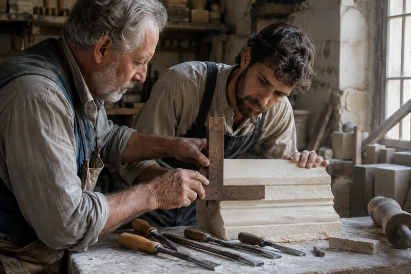
Explore and study
Temple building across generations
Craftsmen measure and shape heavy stone with patience. Piece by piece, their devoted labor prepares a house where generations will come to worship God.
The Church's public overview of the endowment explains how temple instruction relates the Creation, Fall, and Atonement to God's plan. It also describes covenants involving obedience, sacrifice, gospel living, chastity, and consecration. Read those explanations directly so that the terms have more meaning than a list.
The same overview encourages participants to learn over time and says they need not understand everything on their first visit. Preparation includes learning what one is committing to and choosing that commitment prayerfully. A quiet or unfamiliar experience does not need to be compared with someone else's description.
In the accompanying October 2021 message, The Temple and Your Spiritual Foundation, President Russell M. Nelson connects temple covenants with a foundation in Jesus Christ. His complete address also discusses learning through continuing revelation. As a personal reflection, ask how temple learning might deepen gratitude for Him. Joy can be expressed through patient service, keeping a promise, or extending care to a family member. These are practical invitations, not a measure of another person's spiritual worth.
A study you can carry into the week
These focusChrist prompts are invitations for personal reflection.
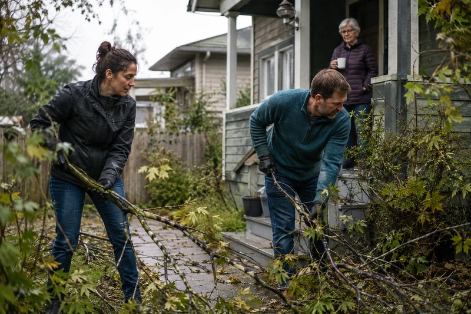
Explore and study
Carry a covenant into daily care
Two neighbors clear fallen branches from an older neighbor's path. The work is practical and personal, quietly fulfilling the baptismal promise to help carry another's burden.
Understand a word
Choose covenant, ordinance, endowment, or sealing. Read its explanation in the official resources and put it into your own words. Ask what the teaching says about the relationship between God and the person making the commitment.
Connect worship and conduct
Choose one ordinary responsibility that could receive greater care: your use of time, honesty at work, attention to family, or service to a neighbor. Consider what covenant discipleship would look like in that specific setting this week.
Prepare an honest question
If you are preparing to attend, bring questions about preparation and participation to your bishop or branch president. If you are simply learning, use the public introduction and source pages freely. This study does not require you to disclose your membership or personal circumstances.
Remember an individual
Consider learning one accurate detail about an ancestor or preserving a family memory with permission. Let your interest begin with a person's life and relationships. The section on service for the dead explains the belief behind proxy ordinances and the importance of agency.
Bring a passage and a specific question to Ask, then check the response against the linked original sources.
Let worship continue in daily life
Doctrine and Covenants 109:7–9 joins learning, prayer, preparation, and going forth in the Lord’s name. Reflect on the purpose of worship as you return to ordinary responsibilities.
What would you like to understand?
Choose a word from the dedicatory prayer, such as faith or learning. Read its surrounding verses and the public Church sources linked above. What question would you bring to a trusted teacher before your next visit or study session?

Give practical help
Practical help gives care a place in ordinary life. Continue with the invitation to serve a neighbor.
Read “Give practical help” in Jesus Christ →What will you carry home?
Consider one commitment that could receive more care in daily life. How might prayer and learning affect your honesty, patience, or attention to another person? Choose a manageable action and a time to return to it.
Whom will you remember with care?
Think of someone whose life is connected with yours, living or deceased. What accurate story could you learn or preserve with permission? Let interest in family history begin with attention to an individual’s life.
Official Sources and Further Study
Where would you like to go next?
Read about life after death
Understand the beliefs behind temple service for those who have died.
Explore family relationships and belonging
Consider eternal hopes alongside the varied realities of family life now.
Watch an introduction to temple worship
Hear an official explanation of temples, then continue with resources about listening and belonging at home.